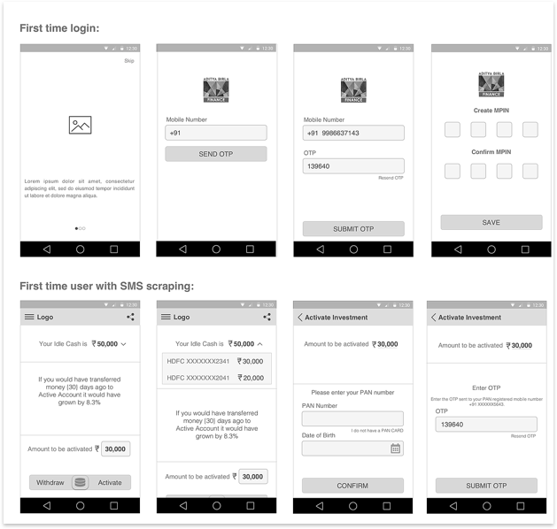

QUICK FACTS
- Role: Associate Product Manager and UX Consultant
- Timeline: October 2016 to July 2017
- Client: Aditya Birla Mutual Fund
- Teammates: Anupam Chandra, Ansu Jain, Sandeep Reddy
- Skills: Research (Ethnographic + Guerrilla), Prototyping, and Product Design/Management
PROBLEM
Aditya Birla had reached a phase where their customer base was not growing. They wanted more people to invest in theor products on their own and not through Financial Advisors. They wanted people to know that it was easy to invest with their company. They were confident that once people invested with their company, they would be able to engage them as their products have always been doing better.
SOLUTION
We designed a mobile application for them which would make them invest in a particular fund in a swipe. The entire project was done in 2 phases. The entire onboarding process, the first phase, was made easy and had to be done only once. The second phase, focused on the engagement module for the investors and increasing their knowledge about investing in general.

USER RESEARCH
During the user research that we conducted, we wanted to know why the users usually choose to invest through Financial Advisors and not on their own. Some of the insights that we got were -
- They did not know which company to invest with
- They are easily over whelmed when they see the number of funds they can invest in
- They do not understand the terminology that is used when the fund details are given which makes the decision even harder
- They are under the impression that they can only invest in big amounts
- While some of them are investing, they have stopped because they do not see a significant increase in their money
After seeing the issues that were faced by the people, we decided to split the project into 2 phases. The first one would be the onboarding experience and in the second phase the focus would be on engaging the investors.
SOLUTION DESIGN
For the first phase, we decided to introduce the following features in the application so that the application can easily have an onboarding phase.
- The application would be designed in a way where the bank account amount could be read. This would be termed as the "idle money".
- After the "idle money" was displayed, then the we displayed a message which would tell the users the return in case they had invested. This would serve as the trigger to the users to invest
- To make the investing procedure easier, we applied the Hick's Law and removed all the noise. We asked Aidtya Birla to choose one fund that is performing well and allowed only investment in that fund.
- At the end of the page, we made sure that the interaction was friendly and introduced the swipe interface. They would swipe right to invest and left to withdraw the money.
- We clearly showed them that they needed to invest only 500 INR as their first investment in case they wanted to start small.
- Lastly, we hid all the product information that could distract the user. All we showed was a link that would take them to a detailed description page that would show the information in normal language for the users to easily understand.
- Lastly, the form was also broken down into steps for easy filling and most of the information was fetched from either the Aadhar API or the PAN Card API to reduce the work of the users.
The entire flow of the application can be seen below -

The implementation of this resulted in the completion of the first phase of the product. The customer base did increase after the launch of the application. Aditya Birla gained over 10,000 investors through this application and most of them started with the minimum value.
For the second half of the project, we designed the dashboard for the users. In this, we ensured that the following features were visible to them -
- The amount that they had invested
- The amount their money has grown by
- We introduced a feature called the "Return Calculator" that would allow them to calculate how much their money would grow at the current market rate as time increased.
- We also introdued a knowledge center for the investors so that they would know what to do in case the market was fluctuating to keep their anxiety at bay.
- There was a notification engine introduced that would give them an update about the money they have made, if the money has been transfered from the bank as well as a message in case the market is performing badly and the steps to be taken after that.
The idea of this engagement module worked in our favor and also made the users feel more confident in their investment decisions. We saw investments rise by a factor of 74% with the minimum being 1500 INR which is trice the minimum value. Another effect that was seen was the increase in the downloads of other Aditya Birla Applications that allowed the users to invest in other funds as well.
FINAL DESIGN
Once the entire wireframing was done, then the visual designs were made. The desings were made keeping the basic design directions in mind and there was only one button that could be used at any given instance. This ensured that they user would not get confused. Another thing that we did was optimized the form. This was done by using radio buttons instead of text inputs.For the money entering process, the default would always be set to the minimum value so that the user did not have to type it after he has invested once. This made the process easier for future investments as well.
After this was done, the withdrawl process had to be carefully designed so that the user knew that he could withdraw from different schemes as well. This turned out to a design challenge for the team to do so in an intuitive way. We played a lot with the use of percentages or numbers and later decided on numbers after conducting a quick user research where we asked the participants to just split the amount that we had given them. This tuened out to be really helpful and in the design also, it can be noticed that it is something that the user can easily withdraw from. The design of the application was not only well received by the users but the competitors appreciated them as well.